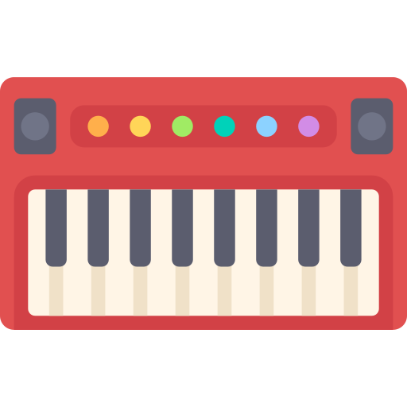

Hello, I’m Michael.
My home is Los Angeles, California.
My home is Los Angeles, California.
I’m a film composer looking to broaden my programming skills. While working as an assistant to composer David Kitay (Clueless, Ghost World, Look Who's Talking), my responsibilities leaned heavily on the tech side and I began to realize that’s where my talents really shined. I'm a pianist, but found myself programming midi more often than I was actually playing. After volunteering to design Kitay’s website and having a blast making it I decided to further develop my skills as a web developer.
I now work as the warehouse general manager for a tech startup that aims to revolutionize the way vintage furniture is bought and sold through an intuitive and streamlined backend.
I want to master the process of building web sites and increase my knowledge, skills and abilities in:
I’d like to work as a UX designer helping clients create intuitive, accessible, and distinguishably singular products.
I would also love to combine my musical background with programming. Within the past few years, modern browsers have finally begun standardizing ways to use local MIDI devices. The implementation of MIDI in the browser opens the door to endless possibilities for musicians. I'm excited to dive into this technology and see what developers are creating.